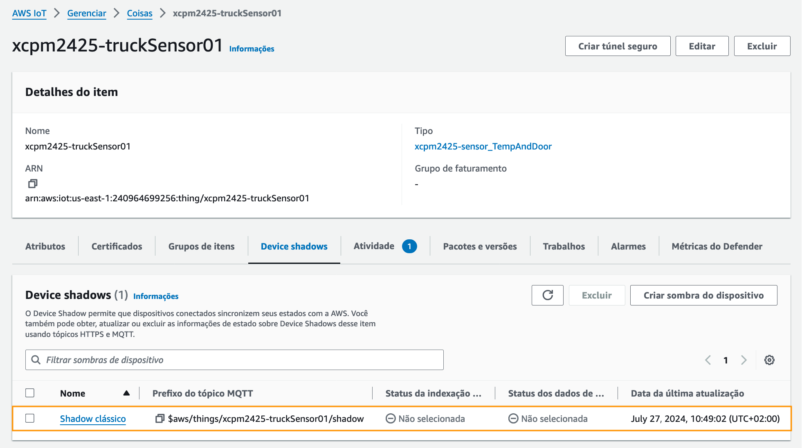
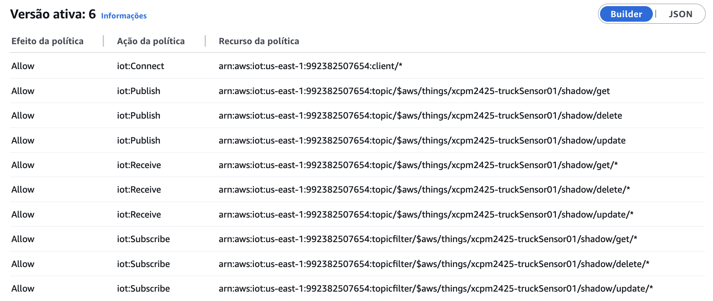
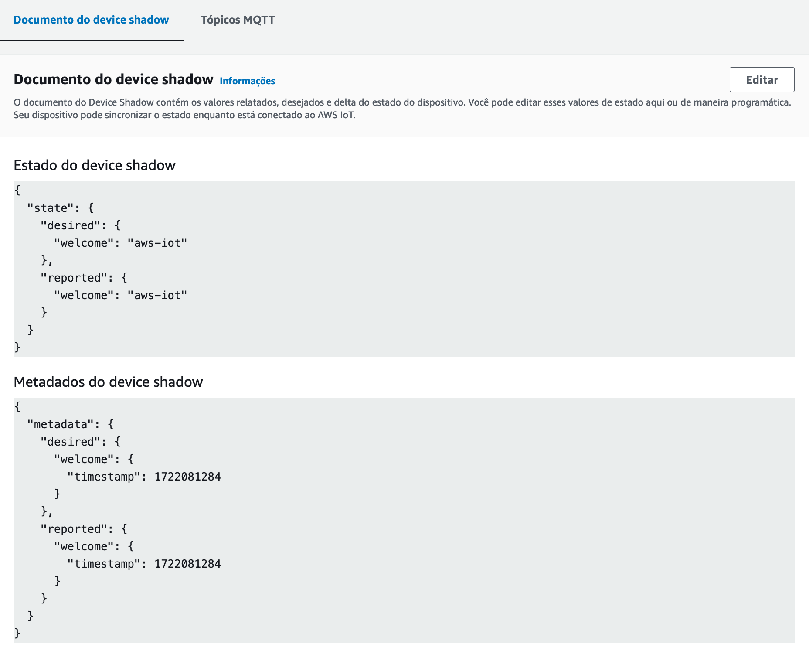
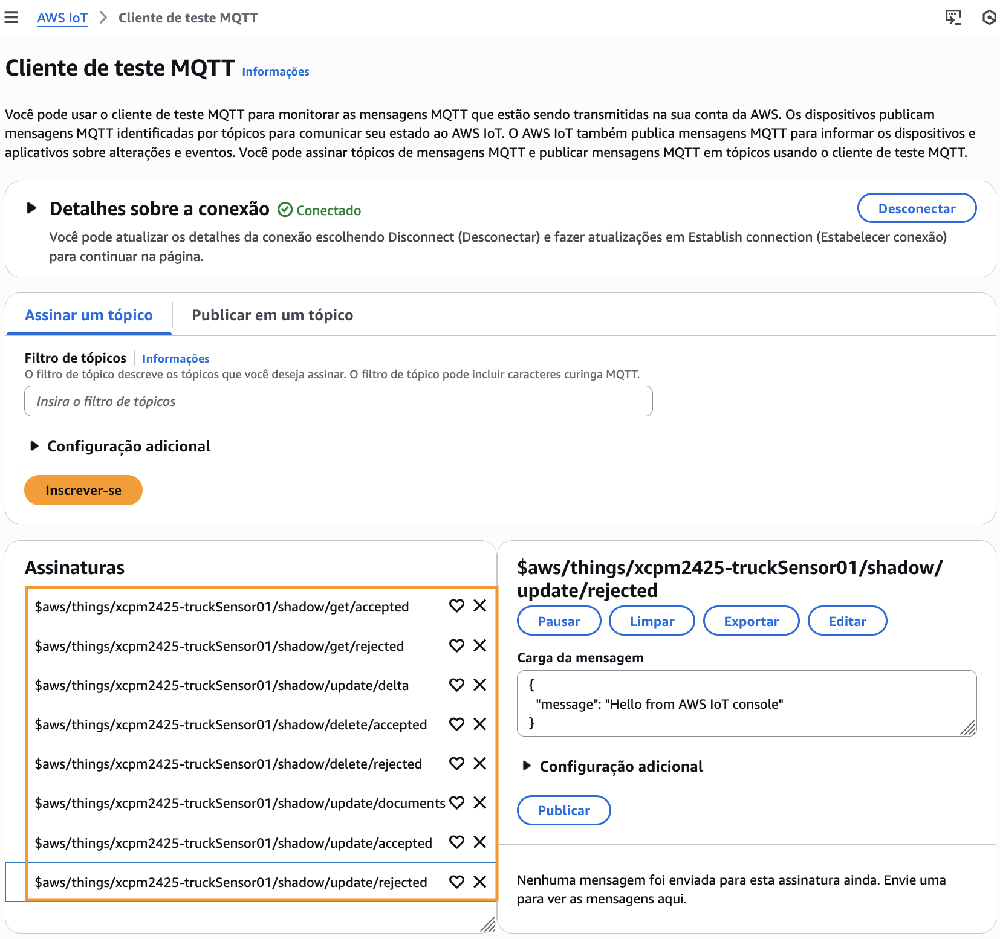
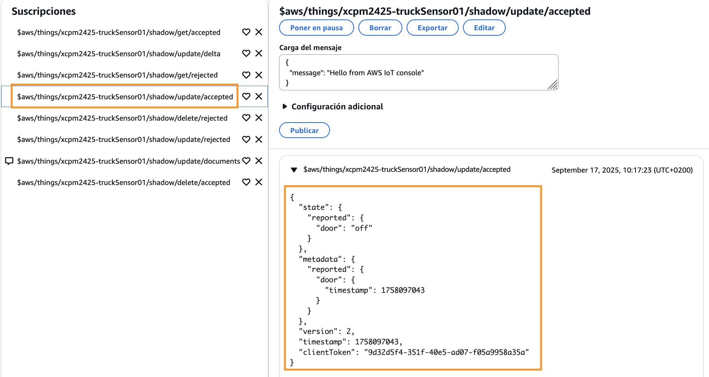
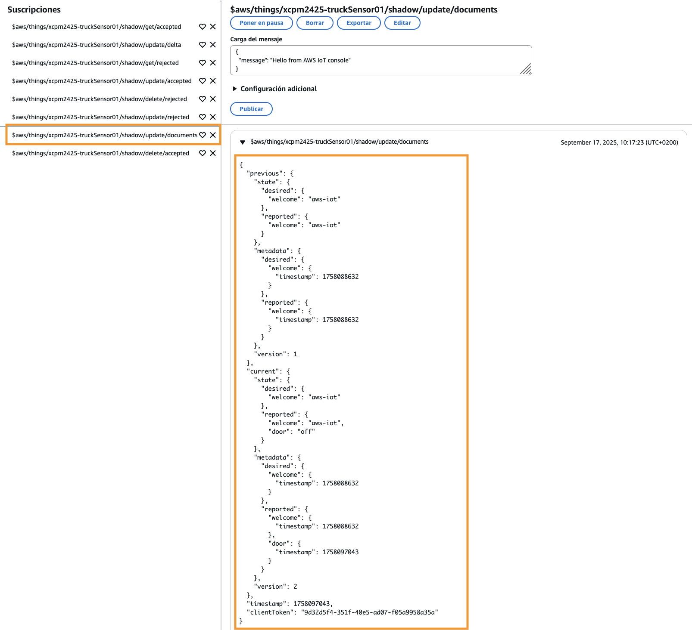
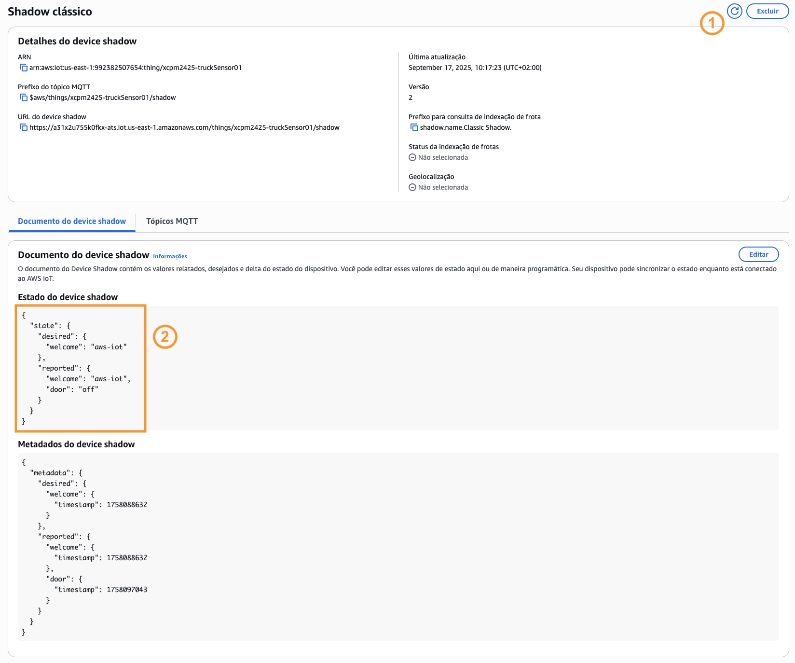
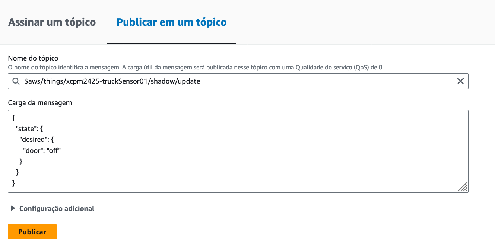

Actividade 3
EXECUTAR O EXEMPLO DE SOMBRAS DE DISPOSITIVO DA DEVICE SDK V2.
Obxectivo
O obxectivo desta actividade é probar un dos exemplos que veñen coa versión 2 do Device SDK.
-
O exemplo que vamos probar utiliza o servizo AWS IoT Device Shadow para manter o valor dunha propiedade sincronizado entre o dispositivo IoT e o servidor.
Nota
Podes ver aquí a documentación do exemplo.
Creación da sombra de dispositivo
Para crear unha sombra de dispositivo fai o seguinte:
- Abre a consola AWS IoT e no panel lateral da esquerda, dentro do submenú Todos os dispositivos, escolle a opción Cousas.
- Abre as propiedades da cousa truckSensor01 e na aba Sombras de dispositivo escolle Crear sombra de dispositivo.
-
Escolle o tipo Sombra sen nome (clásico) e acepta para crear a sombra.

Imaxe: sombra do dispositivo truckSensor01.
Configuración do exemplo
Para configurar o exemplo fai o seguinte:
-
No directorio de scripts da instancia VSCode, crea un script shadow.sh para executar o exemplo. Vamos controlar a través da sombra o valor da propiedade door do camión.
Nomenclatura
No script usa o teu prefixo no nome da cousa.
#!/usr/bin/env bash # stop script on error set -e # set the thing name thing=<O_TEU_PREFIXO>-truckSensor01 # get the AWS IoT endpoint aws iot describe-endpoint > /tmp/iotendpoint.json iot_endpoint=$(jq -r ".endpointAddress" /tmp/iotendpoint.json) # run shadow sample app printf "\nRunning device shadow sample application with $thing thing...\n" python3 $HOME/aws-iot-device-sdk-python-v2/samples/shadow.py \ --endpoint $iot_endpoint \ --cert ../certs/$thing.cert.pem \ --key ../certs/$thing.private.key \ --thing $thing -
Na consola de AWS IoT edita a política truckSensor01-Policy da cousa para permitir a subscrición aos tópicos da sombra e publicar e recibir mensaxes neles.
OLLO
Lembra usar o ID da túa conta nos ARN (Amazon Resource Name) dos recursos.

Imaxe: política AWS IoT modificada.
Importante
Antes de continuar toma as capturas 1 a 3 que se piden para xustificar a actividade.
Proba do exemplo
Estado inicial da sombra
Para configurar o estado inicial da sombra fai o seguinte:
- Nas propiedades da cousa truckSensor01, escolle a aba Sombras de dispositivo e abre as propiedades da sombra premendo no seu nome.
-
Na aba Documento da sombra de dispositivo das propiedades da sombra podes consultar o estado inicial da sombra.

Imaxe: estado inicial da sombra.Nota
Polo dagora a propiedade door non forma parte do estado da sombra.
-
Na aba Tópicos MQTT das propiedades da sombra escolle Cliente de proba MQTT para abrir unha nova xanela do cliente MQTT con subscricións xa configuradas aos tópicos da sombra.

Imaxe: cliente de proba MQTT con subscricións aos tópicos da sombra. -
Executa o exemplo no directorio de scripts e comproba que se conecta á cousa.
$ pwd /home/ubuntu/scripts $ chmod +x shadow.sh $ ./shadow.sh Running device shadow sample application with xcpm2425-truckSensor01 thing... Connected! -
Insire o comando
helppara listar os comandos que proporciona o exemplo para manexar a sombra de dispositivo. Fíxate en que podes usar o comandoquitpara parar a execución do exemplo.help Shadow Sandbox Commands: get - gets the current value of the IoT thing's shadow delete - deletes the IoT thing's shadow update-desired <state-as-JSON> - updates the desired state of the IoT thing's shadow. If the shadow does not exist, it will be created. update-reported <state-as-JSON> - updates the reported state of the IoT thing's shadow. If the shadow does not exist, it will be created. quit - quits the sample application -
Insire o comando
getpara obter o estado actual da sombra. Comproba como os nodosmetadataestatecoinciden cos do document oda sombra que vimos anteriormente.Nota
Para facilitar a lexibilidade, as saídas dos comandos que se mostran como exemplo formataronse.
get get response: awsiot.iotshadow.GetShadowResponse( client_token='548ad806-2fac-4137-b5e6-4730944ece4b', metadata=awsiot.iotshadow.ShadowMetadata( desired={'welcome': {'timestamp': 1758088632}}, reported={'welcome': {'timestamp': 1758088632}} ), state=awsiot.iotshadow.ShadowStateWithDelta( delta=None, desired={'welcome': 'aws-iot'}, reported={'welcome': 'aws-iot'} ), timestamp=datetime.datetime(2025, 9, 17, 7, 32, 42), version=1 ) -
Comproba no cliente MQTT as mensaxes intercambiadas nos tópicos da sombra. Haberá unha mensaxe no tópico
$aws/things/truckSensor01/shadow/get/acceptedque coincide coa resposta do comandoget. Imaxe: Mensaxe publicada no tópico
Imaxe: Mensaxe publicada no tópico $aws/things/truckSensor01/shadow/get/accepted.
Importante
Antes de continuar toma as capturas 4 e 5 que se piden para xustificar a actividade.
Notificación do valor actual da propiedade door
-
Para simular que o dispositivo informa do valor actual da propiedade door, insire o comando
update-reported {"door":"off"}. Fíxate como na resposta ao comando, o valor actual da propiedade aparece no camporeporteddentro do obxectostate.update-reported {"door":"off"} update-reported response: awsiot.iotshadow.UpdateShadowResponse( client_token='9d32d5f4-351f-40e5-ad07-f05a9958a35a', metadata=awsiot.iotshadow.ShadowMetadata( desired=None, reported={'door': {'timestamp': 1758097043}} ), state=awsiot.iotshadow.ShadowState( desired=None, desired_is_nullable=False, reported={'door': 'off'}, reported_is_nullable=False ), timestamp=datetime.datetime(2025, 9, 17, 8, 17, 23), version=2 )Ademais da resposta ao comando, tamén se recibirá un evento
ShadowUpdatedcontendo información sobre o que mudou na sombra do dispositivo xunto con algúns metadatos adicionais. Este evento actívase cada vez que se actualiza o estado da sombra.Nota
A saída do evento podería non aparecer á vez que a do comando
update-reported, pode demorar un pouco.Received ShadowUpdatedEvent: awsiot.iotshadow.ShadowUpdatedEvent( current=awsiot.iotshadow.ShadowUpdatedSnapshot( metadata=awsiot.iotshadow.ShadowMetadata( desired={'welcome': {'timestamp': 1758088632}}, reported={'welcome': {'timestamp': 1758088632}, 'door': {'timestamp': 1758097043}} ), state=awsiot.iotshadow.ShadowState( desired={'welcome': 'aws-iot'}, desired_is_nullable=False, reported={'welcome': 'aws-iot', 'door': 'off'}, reported_is_nullable=False ), version=2 ), previous=awsiot.iotshadow.ShadowUpdatedSnapshot( metadata=awsiot.iotshadow.ShadowMetadata( desired={'welcome': {'timestamp': 1758088632}}, reported={'welcome': {'timestamp': 1758088632}} ), state=awsiot.iotshadow.ShadowState( desired={'welcome': 'aws-iot'}, desired_is_nullable=False, reported={'welcome': 'aws-iot'}, reported_is_nullable=False ), version=1 ), timestamp=datetime.datetime(2025, 9, 17, 8, 17, 23) )A saída do evento inclúe tanto o estado previo (obxecto
previous) como o actúal (obxectocurrent). Fíxate en que no estado actual, a propiedadedoorestá incluída no camporeporteddentro do obxectostateco valoroff. Fíxate tamén en que se incrementou o valor do campoversion. -
Comproba no cliente MQTT as mensaxes intercambiadas nos tópicos da sombra. Haberá mensaxes nos seguintes tópicos:
-
$aws/things/truckSensor01/shadow/update/accepted: a solicitude de actualización do estado da sombra.
Imaxe: Mensaxe publicada no tópico$aws/things/truckSensor01/shadow/update/accepted. -
$aws/things/truckSensor01/shadow/update/documents: a actualización do estado, que agora pasa a conter a propiedade door co valor informado polo dispositivo IoT.
Imaxe: Mensaxe publicada no tópico$aws/things/truckSensor01/shadow/update/documents.
-
-
Nas propiedades da sombra, actualiza as propiedades e comproba como se fixeron efectivos os cambios no documento de estado.

Imaxe: estado actualizado da sombra no que xa aparece a propiedade door.
Importante
Antes de continuar toma as capturas 6 e 7 que se piden para xustificar a actividade.
Cambio da propiedade door no dispositivo IoT
Para simular que a porta se abriu e o dispositivo IoT informa do cambio no valor da propiedade door, fai o seguinte:
-
No terminal da instancia VSCode na que se está a executar o script shadow.sh, insire o comando
update-reported {"door":"on"}. Fíxate como na resposta ao comando, o novo valor da propiedade aparece no camporeporteddentro do obxectostate.update-reported response: awsiot.iotshadow.UpdateShadowResponse( client_token='0c34de55-48e5-4c15-82ad-5b4e86ee0257', metadata=awsiot.iotshadow.ShadowMetadata( desired=None, reported={'door': {'timestamp': 1758101001}} ), state=awsiot.iotshadow.ShadowState( desired=None, desired_is_nullable=False, reported={'door': 'on'}, reported_is_nullable=False ), timestamp=datetime.datetime(2025, 9, 17, 9, 23, 21), version=3 )Igual que no apartado anterior, tamén se recibirá un evento
ShadowUpdated. Comproba na saída do evento que o valor da propiedade door mudou entre o o estado previo e o actual, e que se incrementou a versión. -
Comproba no cliente MQTT as mensaxes recibidas nos tópicos da sombra. De novo haberá mensaxes nos tópicos:
$aws/things/truckSensor01/shadow/update/acceptedcoa solicitude de actualización do estado da sombra.$aws/things/truckSensor01/shadow/update/documentscoa actualización do estado.
-
Nas propiedades da sombra, actualiza as propiedades e comproba como se fixeron efectivos os cambios no documento de estado da sombra.
-
Proba agora a volver a executar o comando
update-reported {"door":"on"}no terminal da instancia VSCode na que está a se executar o script shadow.sh. Comproba o seguinte:- Na resposta ao comando, que o valor da propiedade door segue a ser
onno camporeporteddentro do obxectostatee que o valor deversionincrementouse. - Na saída do evento
ShadowUpdated, que o valor da propiedade door éontanto no estado actual coma no previo e que o valor deversionincrementouse. - No cliente MQTT, as mensaxes publicadas nos tópicos da sombra
$aws/.../update/acceptede$aws/.../update/documents. - Nas propiedades da sombra, actualiza as propiedades e comproba que o valor da propiedade door segue a ser
on, mais que mudaron otimestampda propiedade e a versión do documento.
- Na resposta ao comando, que o valor da propiedade door segue a ser
Importante
Antes de continuar toma as capturas 8 e 9 que se piden para xustificar a actividade.
Cambio de estado na sombra co dispositivo IoT conectado
Vamos comprobar agora como se utiliza o estado da sombra para actualizar o estado da propiedade door no dispositivo. Simularemos tanto unha situación na que se solicita un cambio no valor da propiedade estando o dispositivo conectado, como unha situación na que o dispositivo está desconectado.
Para simular o cambio no valor da propiedade door co dispositivo IoT conectado fai o seguinte:
- Asegúrate de que o script shadow.sh estexa a se executar na instancia VSCode.
-
No cliente MQTT publica no tópico
$aws/things/truckSensor01/shadow/updatea mensaxe seguinte:{ "state": { "desired": { "door": "off" } } }
Imaxe: cliente MQTT configurado para publicar unha mensaxe no tópicoupdateda sombra. -
Comproba no cliente MQTT as mensaxes recibidas nos tópicos da sombra.
Nota
Se a actualización fallou haberá unha mensaxe no tópico
$aws/things/truckSensor01/shadow/update/rejectedindicando a causa.Se a actualización se fixo correctamente haberá 3 tópicos que conteñan mensaxes:
-
No tópico
$aws/things/truckSensor01/shadow/update/acceptedpublicouse a mensaxe coa solicitude de actualización do estado da sombra realizada desde o cliente MQTT. O servizo Device Shadow incrementou o número de versión e adicionou os valores de timestamp e os metadatos.{ "state": { "desired": { "door": "off" } }, "metadata": { "desired": { "door": { "timestamp": 1758176402 } } }, "version": 5, "timestamp": 1758176402 } -
No tópico
$aws/things/truckSensor01/shadow/update/deltapublicouse unha mensaxe coas diferenzas entre os estadosdesiredda solicitude ereporteddo estado actual. Esta mensaxe será notificada, como veremos despois, ao dispositivo IoT que está subscrito a este tópico.{ "version": 5, "timestamp": 1758176402, "state": { "door": "off" }, "metadata": { "door": { "timestamp": 1758176402 } } } -
No tópico
$aws/things/truckSensor01/shadow/update/documentspublicouse a mensaxe coa información do que mudou no estado da sombra. Fíxate en que no obxectocurrent, o valor da propiedade door nos obxectosdesiredereportedé diferente. Esta mensaxe será notificada, como veremos despois, ao dispositivo IoT que está subscrito a este tópico.{ "previous": { "state": { "desired": { "welcome": "aws-iot" }, "reported": { "welcome": "aws-iot", "door": "on" } }, "metadata": { "desired": { "welcome": { "timestamp": 1758088632 } }, "reported": { "welcome": { "timestamp": 1758088632 }, "door": { "timestamp": 1758101807 } } }, "version": 4 }, "current": { "state": { "desired": { "welcome": "aws-iot", "door": "off" }, "reported": { "welcome": "aws-iot", "door": "on" } }, "metadata": { "desired": { "welcome": { "timestamp": 1758088632 }, "door": { "timestamp": 1758176402 } }, "reported": { "welcome": { "timestamp": 1758088632 }, "door": { "timestamp": 1758101807 } } }, "version": 5 }, "timestamp": 1758176402 }
-
-
Comproba o que aconteceu no terminal VSCode no que está a se executar o script shadow.sh.
 Imaxe: resposta no terminal do script shadow.sh ao cambio de estado da sombra.
Imaxe: resposta no terminal do script shadow.sh ao cambio de estado da sombra.O que podemos ver na saída do terminal é que o dispositivo IoT recibiu dous eventos:
- No evento
ShadowDeltaUpdatedrecibe a mensaxe publicada no tópico$aws/.../update/delta, que contén o novo valor desexado para a propiedade door. - No evento
ShadowUpdatedrecibe a mensaxe publicada no tópico$aws/.../update/documentscoa información do que mudou no estado da sombra.
Comproba que as mensaxes recibidas nos eventos coinciden coas publicadas nos tópicos correspondentes.
- No evento
-
A resposta do dispositivo IoT ao recibir o evento
ShadowDeltaUpdatedserá aplicar o valor desexado á propiedade door (é dicir, pechar a porta do conxelador) e informar do novo valor da propiedade.Para simular que o dispositivo pechou a porta do conxelador, no terminal da instancia VSCode na que se está a executar o script shadow.sh, insire o comando
update-reported {"door":"off"}. -
Na saída do terminal, despois de executar o comando do paso anterior, podemos ver a resposta ao comando así como o evento
ShadowUpdatedcontendo a información sobre o que mudou na sombra do dispositivo, tal e como xa se explicou no apartado Cambio da propiedade door no dispositivo IoT. Imaxe: resposta no terminal do script shadow.sh despois de informar do cambio de estado da propiedade door.
Imaxe: resposta no terminal do script shadow.sh despois de informar do cambio de estado da propiedade door. -
A mensaxe enviada polo dispositivo é procesada polo servizo Device Shadow que publica unha mensaxe de aceptación da actualización no tópico
$aws/.../update/acceptede outra co documento de cambio de estado da sombra no tópico$aws/.../update/documents.Comproba que esas mensaxes son as últimas publicadas nos correspondentes tópicos e que, a diferenza das que vimos anteriormente que se publicaron ao solicitar o cambio de estado da propiedade door desde o cliente MQTT, estas mensaxes inclúen un campo
clientToken. Este campo permite identificar cales son a(s) resposta(s) que se corresponden con unha solicitude específica.Por exemplo, no tópico
$aws/.../update/accepteda mensaxe sería:{ "state": { "reported": { "door": "off" } }, "metadata": { "reported": { "door": { "timestamp": 1758178460 } } }, "version": 6, "timestamp": 1758178460, "clientToken": "3109b579-a8ab-480e-94ab-850768378545" } -
Nas propiedades da sombra, actualiza as propiedades e comproba os cambios no documento de estado. Agora o valor da propiedade door é
offtanto no campodesiredcomo noreported.
Importante
Antes de continuar toma as capturas 10 e 11 que se piden para xustificar a actividade.
Cambio de estado na sombra co dispositivo IoT desconectado
Para cambiar o estado da sombra co dispositivo IoT desconectado fai o seguinte:
-
No terminal da instancia VSCode no que está a se executar o script shadow.sh escribe
quitpara parar a execución do script. -
No cliente MQTT publica no tópico
$aws/things/truckSensor01/shadow/updatea mensaxe seguinte:{ "state": { "desired": { "door": "on" } } } -
Repite o paso previo varias veces, cambiando o valor de door a
onouoff(tamén podes repetir valor). Comproba as mensaxes que se publican nos tópicos$aws/.../update/accepted,$aws/.../update/deltae$aws/.../update/documentscada vez que publiques. -
Asegúrate de que despois de repetir o paso anterior varias veces, a última mensaxe que publiques teña o valor de door a
on. -
Nas propiedades da sombra, actualiza as propiedades e comproba os cambios no documento de estado. Comproba que aparece un obxecto
deltaque indica a diferenza entre os obxectosdesiredereported.{ "state": { "desired": { "welcome": "aws-iot", "door": "on" }, "reported": { "welcome": "aws-iot", "door": "off" }, "delta": { "door": "on" } } }
Importante
Antes de continuar toma a captura 12 que se pide para xustificar a actividade.
-
Repite o paso 2 co valor de door a
off. -
Nas propiedades da sombra, actualiza as propiedades e comproba os cambios no documento de estado. Comproba que o campo
deltaxa non aparece no documento.{ "state": { "desired": { "welcome": "aws-iot", "door": "off" }, "reported": { "welcome": "aws-iot", "door": "off" } } } -
Na instancia VSCode executa o script shadow.sh e insire o comando
get. Comproba na resposta ao comando que tanto o valor desexado como o informado da propiedade door sonoffe o campodeltaéNone. O dispositivo non tería que aplicar ningún cambio neste caso. Imaxe: saida do script shadow.sh cando o estado da sombra coincide co do dispositivo.
Imaxe: saida do script shadow.sh cando o estado da sombra coincide co do dispositivo.
Importante
Antes de continuar toma a captura 13 que se pide para xustificar a actividade.
-
No terminal escribe
quitpara parar a execución do script. -
Repite o paso 2 co valor de door a
on. -
Executa de novo o script shadow.sh e insire o comando
get. Comproba como a resposta contén un campodelta, que indica que o estado da sombra mudou mentres o dispositivo estivo desconectado. Ao non haber coincidencia entre o estado da sombra e o do dispositivo, este tería que aplicar o novo estado requirido (é dicir, abrir a porta do conxelador) e informar do novo valor da propiedade door.get response: awsiot.iotshadow.GetShadowResponse( client_token='6aa7e224-7d79-440b-83bb-e0148d50514b', metadata=awsiot.iotshadow.ShadowMetadata( desired={ 'welcome': {'timestamp': 1758088632}, 'door': {'timestamp': 1758182080} }, reported={ 'welcome': {'timestamp': 1758088632}, 'door': {'timestamp': 1758178460} } ), state=awsiot.iotshadow.ShadowStateWithDelta( delta={'door': 'on'}, desired={'welcome': 'aws-iot', 'door': 'on'}, reported={'welcome': 'aws-iot', 'door': 'off'} ), timestamp=datetime.datetime(2025, 9, 18, 7, 55, 43), version=15 )
Importante
Antes de continuar toma a captura 14 que se pide para xustificar a actividade.
-
Comproba no cliente MQTT as mensaxes publicadas nos tópicos da sombra polos pasos anteriores.
-
Comproba o estado da sombra nas propiedades da sombra na consola AWS IoT.
Importante
Non esquezas tomar a captura 15, a última que se pide para xustificar a actividade.
Xustificación da actividade
Resume das capturas que hai que tomar para a memoria de xustificación da práctica.
Creación da sombra de dispositivo
- Na consola IoT as propiedades da cousa truckSensor01 coa aba Sombras de dispositivo escollida na que poida verse a sombra.
Configuración do exemplo
- Instancia VSCode co código do script shadow.sh aberto nun terminal.
- Propiedades da política truckSensor01-Policy modificada.
Proba do exemplo
Estado inicial da sombra
- Instancia VSCode coa saída do terminal na que se executou o comando
get. - Consola IoT coas propiedades da sombra da cousa truckSensor01 na que poida verse o estado inicial do documento da sombra.
Notificación do valor actual da propiedade door
- Instancia VSCode coa saída do terminal na que se executou o comando update-reported.
- Consola IoT coas propiedades da sombra da cousa truckSensor01 na que poida verse o estado modificado contendo a propiedade door.
Cambio da propiedade door no dispositivo IoT
- Cliente MQTT na consola IoT na que se vexa o contido da mensaxe recibida no tópico
$aws/things/truckSensor01/shadow/update/documents. - Consola IoT coas propiedades da sombra da cousa truckSensor01 na que poida verse o estado modificado.
Cambio de estado na sombra co dispositivo IoT conectado
- Cliente MQTT na consola IoT na que se vexa o contido das dúas últimas mensaxes recibidas no tópico
$aws/things/truckSensor01/shadow/update/accepted. - Consola IoT coas propiedades da sombra da cousa truckSensor01 na que poida verse o estado modificado.
Cambio de estado na sombra co dispositivo IoT desconectado
- Consola IoT coas propiedades da sombra da cousa truckSensor01 na que poida verse o estado contendo un campo
delta. - Instancia VSCode coa saída do terminal na que se executou o comando
getcando o estado da sombra coincide co do dispositivo. - Instancia VSCode coa saída do terminal na que se executou o comando
getcando o estado da sombra é diferente ao do dispositivo. - Cliente MQTT na consola IoT na que se vexa o contido das dúas últimas mensaxes recibidas no tópico
$aws/things/truckSensor01/shadow/update/delta.
Importante
As capturas teñen que asemellarse ás que se tomaron no curso e na práctica 1. As capturas tomadas na consola AWS teñen que incluír o menú superior no que poida verse o nome de usuario da conta.